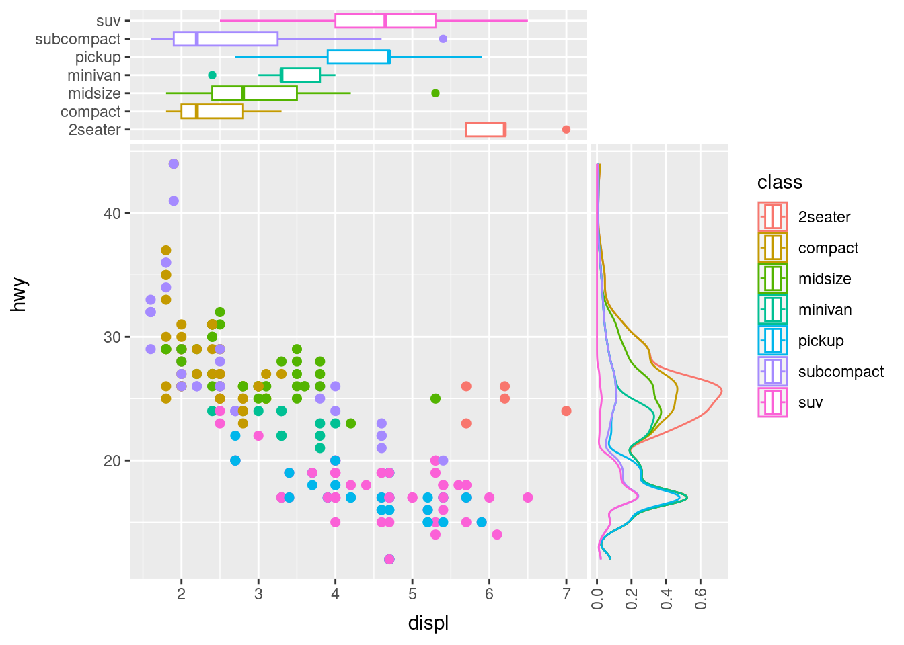

Extra Material
1 Diving Deeper into ggplot2 Extensions
ggplot2 stands as a cornerstone for data visualization in R. But the richness of the R ecosystem extends far beyond its foundational tools. Complementing the core offerings of ggplot2 is a suite of powerful extension packages, each designed to elevate and refine your visualization experiences.
In this section, we’ll journey through three particularly impactful extensions:
While our exploration in this section will be guided, it comes with a twist. We’ll be immersing ourselves in blogs and webpages from the broader R community. The aim? To prepare you for a future where you venture into the vast expanse of the R ecosystem independently, leveraging the collective wisdom of the global R community to enhance your data science journey.
So, let’s embark on this exciting deep dive together, expanding our ggplot2 horizons and embracing the broader world of R.
1.1 gganimate
Breathe life into your static plots by transforming them into animations. Whether you’re showcasing trends over time or simply adding a dynamic touch to your visuals, gganimate is your go-to tool.
1.2 ggiraph
Make your plots interactive! With ggiraph, you can create hover-over effects, clickable elements, and other interactive features that make your plots more engaging and informative.
1.3 ggside
Expand the canvas of your data stories by crafting marginal plots alongside your primary visualization. With ggside, you can seamlessly incorporate histograms, density plots, or boxplots directly adjacent to your main plot. Whether it’s enriching a scatterplot with marginal distributions or adding supplementary insights, ggside offers that extra dimension to your visual narratives.
